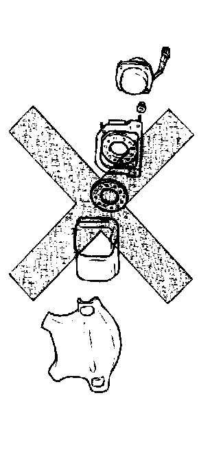
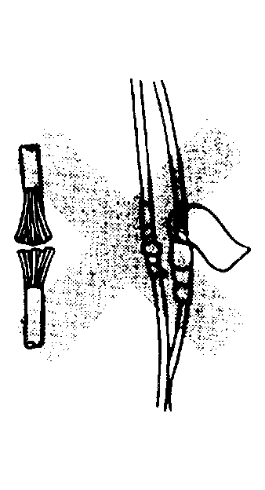
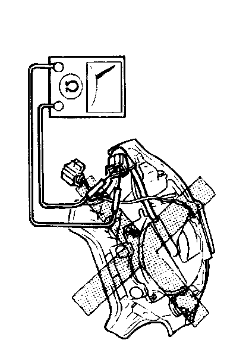
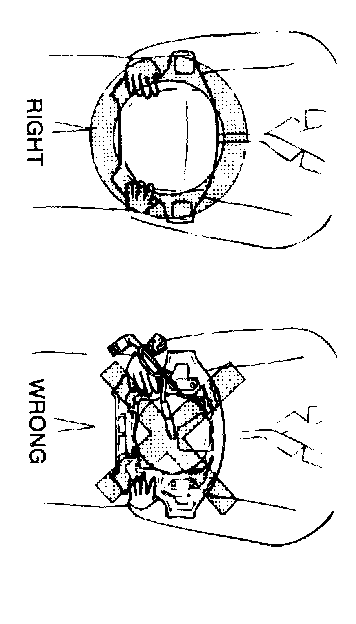

Air Bag(s) Arming and Disarming: Service Precautions

Component Disassembly
Disassembling and reassembling air bag system components can render the system inoperative which may result in serious injury or death in the event of an accident. Do not disassemble any air bag system component.

Wiring Harness Repair
Incorrectly repairing an air bag system wiring harness can accidently deploy the air bag module which can cause serious injury. If a problem is found in the system wiring, replace the wiring harness. Do not try to repair it.

Air Bag Module Inspection
Inspecting the air bag module by using an ohmmeter can deploy the air bag module which may cause serious injury. Do not use an ohmmeter to inspect the air bag module. Always use the on-board diagnostic function to diagnose the air bag for malfunctions.

Air Bag Module Handling
A live (undeployed) air bag module may accidently deploy when it is handled and cause serious injury. When carrying a live (undeployed) air bag module, point the front surface away from your body to lessen the chance of injury in case it deploys.

A live (undeployed) air bag module placed face down on a surface is dangerous. If the air bag module deploys, the motion of the module can cause serious injury. Always face the front surface up to reduce the motion of the module in case it accidently deploys.
SAS Control Module Handling
Disconnecting the SAS control module connector or removing the SAS control module with the ignition switch at ON can cause the air bag modules to deploy, which may seriously injure you. Before disconnecting the SAS control module connector or removing the SAS control module, turn the ignition switch to LOCK, then disconnect the negative battery cable and wait for more than 1 minute to allow the backup power supply of the SAS control module to deplete its stored power.
Connecting the SAS control module connector without firmly installing the SAS control module to the vehicle is dangerous. The crash sensor inside the control module may send an electrical signal to the air bag modules. This will deploy the air bag modules, which may result in serious injury. Therefore, before connecting the connector, firmly mount the control module to the vehicle.
For vehicles with a single point sensor, once an air bag is deployed due to an accident or other causes, the SAS control module must be replaced with a new one even if the used one does not have any external signs of damage. The used SAS control module may have been damaged internally which may cause improper operation, resulting in major injuries or even death. The used single point SAS control module cannot be bench-checked or self-checked.
Component Handling
Oil, grease, water, etc on components may cause the air bag to fail to deploy in an accident, which may cause serious injury. Do not allow oil, grease, water, etc on components.
Inserting a screwdriver, etc into the connector of the air bag module may damage the connector and cause the air bag module to deploy improperly, which may cause serious injury. Do not insert any foreign objects into the connector.
Component Reusing
Once an air bag module is deployed due to an accident or other causes, even if it does not have any external signs of damage, the air bag module may have been damaged internally which may cause improper operation. The improper operation may cause serious injury. Always self-check the undamaged air bag module to determine whether it can be reused.